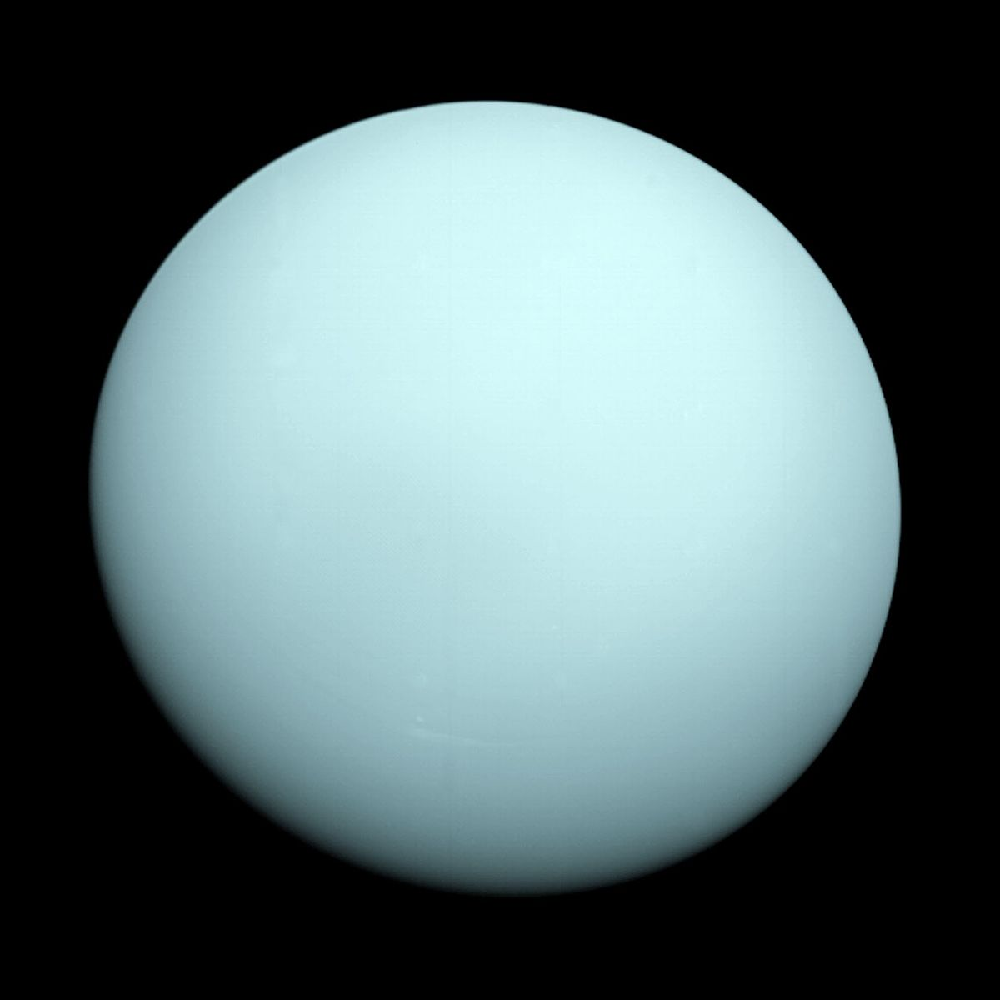

Uranus is the seventh planet from the sun and the first to be discovered by scientists. Although
Uranus is visible to the naked eye, it was long mistaken as a star because of the planet's dimness
and slow orbit. The planet is also notable for its dramatic tilt, which causes its axis to point
nearly directly at the sun.
British astronomer William Herschel discovered Uranus accidentally on March 13, 1781, with his
telescope while surveying all stars down to those about 10 times dimmer than can be seen by the
naked eye. One "star" seemed different, and within a year Uranus was shown to follow a planetary
orbit.
Uranus was named after the Greek sky deity Ouranos, the earliest of the lords of the heavens. It is
the only planet to be named after a Greek god rather than a Roman one. Before the name was settled
on, many names had been proposed for the new planet, including Hypercronius ("above Saturn"),
Minerva (the Roman goddess of wisdom), and Herschel, after its discoverer. To flatter King George
III of England, Herschel himself offered Georgium Sidus ("The Georgian Planet") as a name, but that
idea was unpopular outside of England and George's native Hanover. German astronomer Johann Bode,
who detailed Uranus' orbit, gave the planet its ultimate name. Bode argued that as Saturn was the
father of Jupiter, the new planet should be named for the father of Saturn. Bode's colleague, Martin
Klaproth, supported his choice and named his newly discovered element "uranium."

Uranus is blue-green in color, the result of methane in its mostly hydrogen-helium atmosphere. The
planet is often dubbed an ice giant, since 80 percent or more of its mass is made up of a fluid mix of
water, methane, and ammonia ices.
Unlike the other planets of the solar system, Uranus is tilted so far that it essentially orbits the sun
on its side, with the axis of its spin nearly pointing at the star. This unusual orientation might be
due to a collision with a planet-size body, or several small bodies, soon after it was formed.
This unusual tilt gives rise to extreme seasons roughly 20 years long, meaning that for nearly a quarter
of the Uranian year, equal to 84 Earth-years, the sun shines directly over each pole, leaving the other
half of the planet to experience a long, dark, cold winter
Uranus has the coldest atmosphere of any of the planets in the solar system, even though it is not the
most distant from the sun. That's because Uranus has little to no internal heat to supplement the heat
of the sun.
The magnetic poles of most planets are typically lined up with the axis along which it rotates, but
Uranus' magnetic field is tilted, with its magnetic axis tipped over nearly 60 degrees from the planet's
axis of rotation. According to Norman F. Ness, et al., in an article in the journal Science in 1986,
this leads to a strangely lopsided magnetic field for Uranus, with the strength of the field at the
northern hemisphere's surface being up to more than 10 times that of the strength at the southern
hemisphere's surface, affecting the formation of the auroras. A 2017 study suggested the lopsided nature
of Uranus' magnetic field may also lead it to flicker on and off every time the planet rotates (about
every 17.24 hours).
The extreme axial tilt Uranus experiences can give rise to unusual weather. As sunlight reaches some
areas for the first time in years, it heats up the atmosphere, triggering gigantic springtime storms
roughly the size of North America, according to NASA.
Ironically, when Voyager 2 first imaged Uranus in 1986 at the height of summer in its south, it saw a
bland-looking sphere with only about 10 or so visible clouds, leading to it to be dubbed "the most
boring planet," writes astronomer Heidi Hammel in "The Ice Giant Systems of Uranus and Neptune," a
chapter in "Solar System Update" (Springer, 2007). It took decades later, when advanced telescopes such
as Hubble came into play and the seasons changed, to see extreme weather on Uranus, where fast-moving
winds can reach speeds of up to 560 miles (900 kilometers) per hour.
In 2014, astronomers got their first glimpse at summer storms raging on Uranus. Strangely, these massive
storms took place seven years after the planet reached its closest approach to the sun, and it remains a
mystery why the giant storms were so late.
Other unusual weather on Uranus includes diamond rain, which is thought to fall thousands of miles below
the surfaces of icy giant planets such as Uranus and Neptune. Carbon and hydrogen are thought to
compress under extreme heat and pressure deep in the atmospheres of these planets to form diamonds,
which are then thought to sink downward, eventually settling around the cores of those worlds.
The rings of Uranus were the first to be seen after Saturn's. They were a significant discovery, because
it helped astronomers understand that rings are a common feature of planets, not merely a peculiarity of
Saturn.
Uranus possesses two sets of rings. The inner system of rings consists mostly of narrow, dark rings,
while an outer system of two more-distant rings, discovered by the Hubble Space Telescope, are brightly
colored, one red, one blue. Scientists have now identified 13 known rings around Uranus.
A 2016 study suggested the rings of Uranus, Saturn and Neptune may be the remnants of Pluto-like dwarf
planets that strayed too close to the giant worlds long ago.